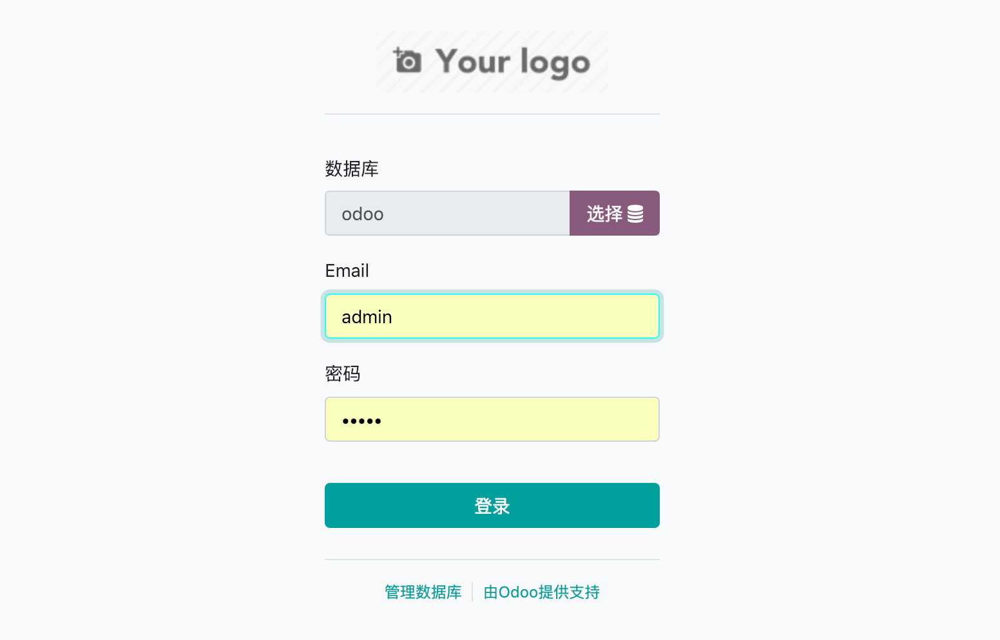

启动 Odoo
在我们拉取的源码的根目录下有一个 odoo-bin 的 Python 脚本文件，这个是 Odoo 的启动脚本。
运行该脚本之后会在8069默认端口启动 Odoo 服务，启动之前需要运行 pipenv shell 进入虚拟环境。
💡 如果是用 Pycharm 启动首先需要在 Preferences > Project > Project Interpreter > Add > Existing Environment 中
将使用 pipenv 生成的 Python 添加进去，一般 pipenv 生成的虚拟环境目录在 ~/.local/share/virtualenvs/，如果是按照上一篇生成的虚拟环境，
则目录则为 ~/.local/share/virtualenvs/odoo_env-* (* 号为随机字符串)。
运行 Odoo 启动脚本：
$ pipenv shell
$ ./odoo-bin
2019-01-08 14:23:16,295 118 INFO ? odoo: Odoo version 12.0
2019-01-08 14:23:16,296 118 INFO ? odoo: addons paths: ['/root/.local/share/Odoo/addons/12.0', '/root/odoo_dev/odoo/addons', '/root/odoo_dev/addons']
2019-01-08 14:23:16,296 118 INFO ? odoo: database: default@default:default
2019-01-08 14:23:16,380 118 INFO ? odoo.addons.base.models.ir_actions_report: You need Wkhtmltopdf to print a pdf version of the reports.
2019-01-08 14:23:16,477 118 INFO ? odoo.service.server: HTTP service (werkzeug) running on 074d4c08f8b7:8069
然后我们使用浏览器访问http://localhost:8069，这时候可能会出现：
odoo.sql_db: Connection to the database failed
...
psycopg2.OperationalError: FATAL: role "xxx" does not exist - - -
出现这个错误的原因是我们还没有在 Odoo 启动配置文件 里配置数据库账号和密码，但是 Odoo 的启动配置文件在哪里呢。
我们在命令行输入：
$ ./odoo-bin --help
...
Common options:
-c CONFIG, --config=CONFIG
specify alternate config file
-s, --save save configuration to ~/.odoorc (or to
~/.openerp_serverrc if it exists)
...
可以看到使用 -s 或 --save 参数，Odoo 会在 home 目录下生成 .odoorc 配置文件，并且用 -c 参数可以指定启动的配置文件。
💡 若不指定 Odoo 的运行配置文件，并且 home 目录下存在 .odoorc 配置文件，则 Odoo 默认会选择这个作为启动的配置文件。
于是我们可以先运行，然后在 Ctrl + C 停止 Odoo：
$ ./odoo-bin -s
...
2019-01-08 14:37:57,127 152 INFO ? odoo.service.server: Hit CTRL-C again or send a second signal to force the shutdown.
然后编辑 ~/.odoorc 文件，将 db_user 和 db_password 分别修改为我们在安装 PostgreSQL时设置的用户 odoo 和这个用户的密码。
...
db_password = ****
...
db_user = odoo
...
再次运行启动脚本启动 Odoo，这时已经可以成功访问 http://localhost:8069 了，并且进入的是一个数据库选择页面， 我们可以直接选择 odoo 数据库或者点击 「Manage Databases」跳转到数据库创建页面。

选择好数据库之后，就可以进入到 Odoo 的登陆界面了，默认的管理员账号密码均为 admin。
为了在进入 Odoo 时防止每次都要显示数据库选择界面，我们将配置文件的 db_name 参数设置为我们的数据库名称，例如：db_name=odoo，或者在启动参数增加 -d odoo。

💡 为了方便的修改 Odoo 的配置文件，可以复制 ~/.odoorc 到项目根目录下如 ./odoorc.ini，执行时增加 -c ./odoorc.ini 参数指定配置文件。
⚠️ 若出现以下错误
$ ERROR ? odoo.modules.loading: Database odoo not initialized, you can force it with `-i base`
则在启动参数添加 -i base 参数，他会初始化 odoo 的基础数据到 postgresql 中。
$ ./odoo-bin -c ./odoorc.ini -d odoo -i base